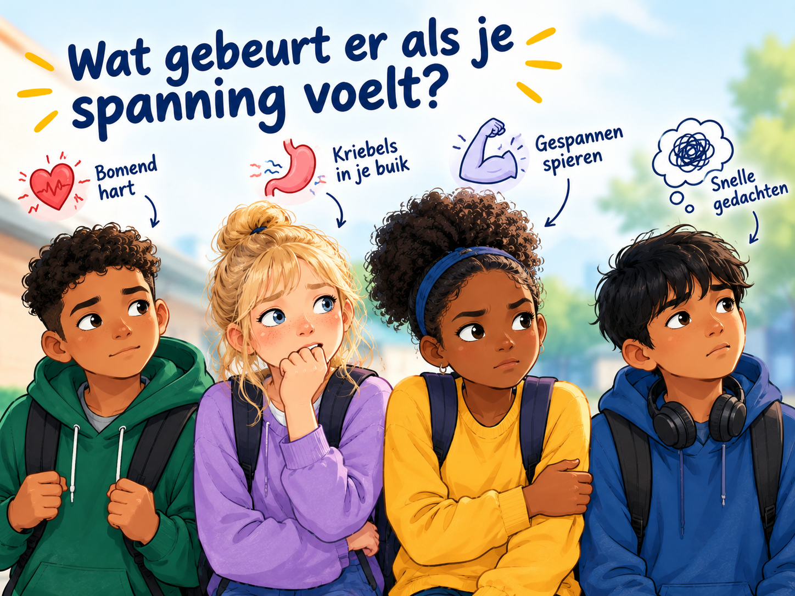
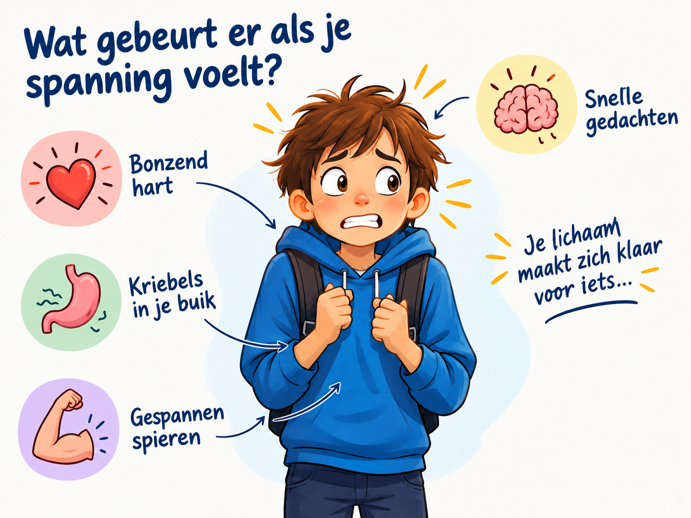
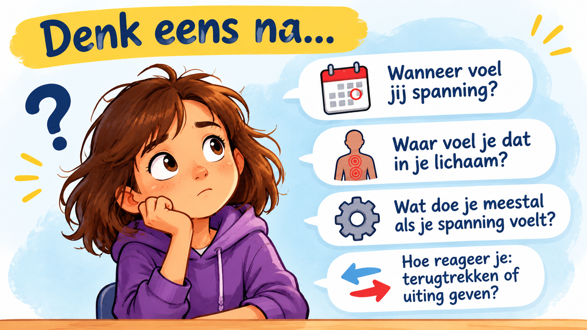
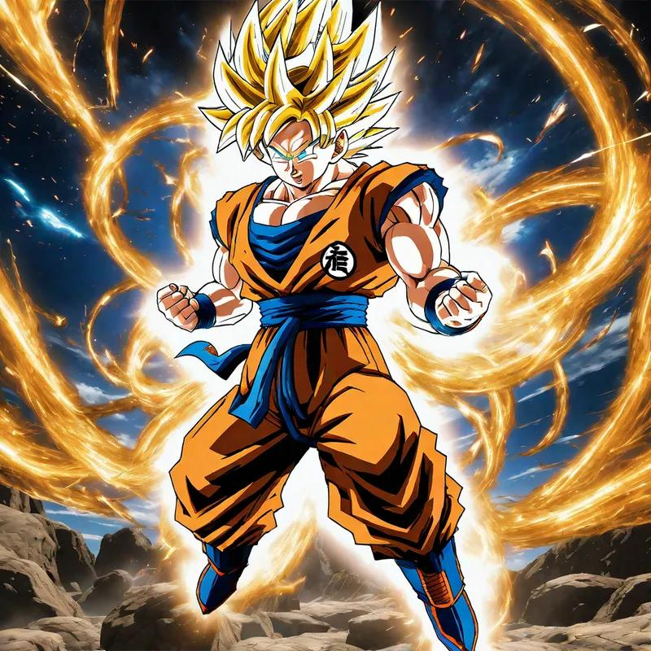
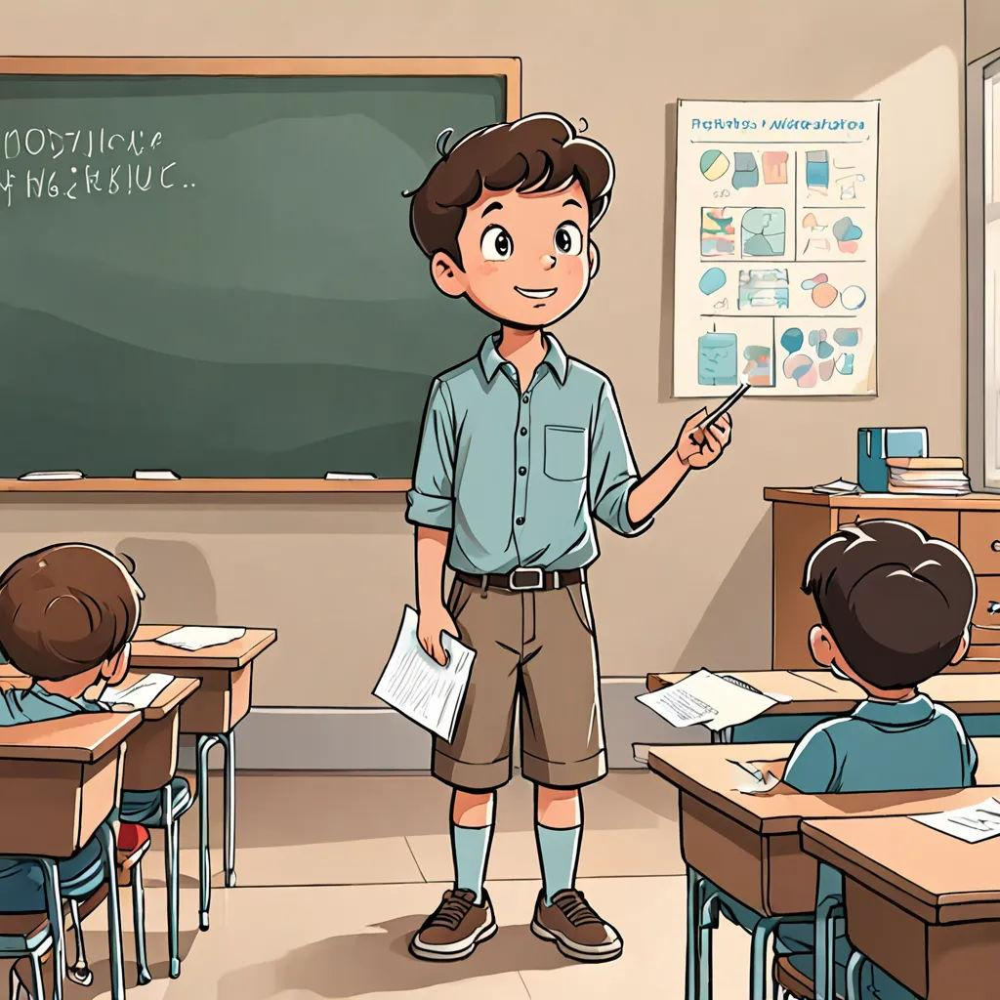
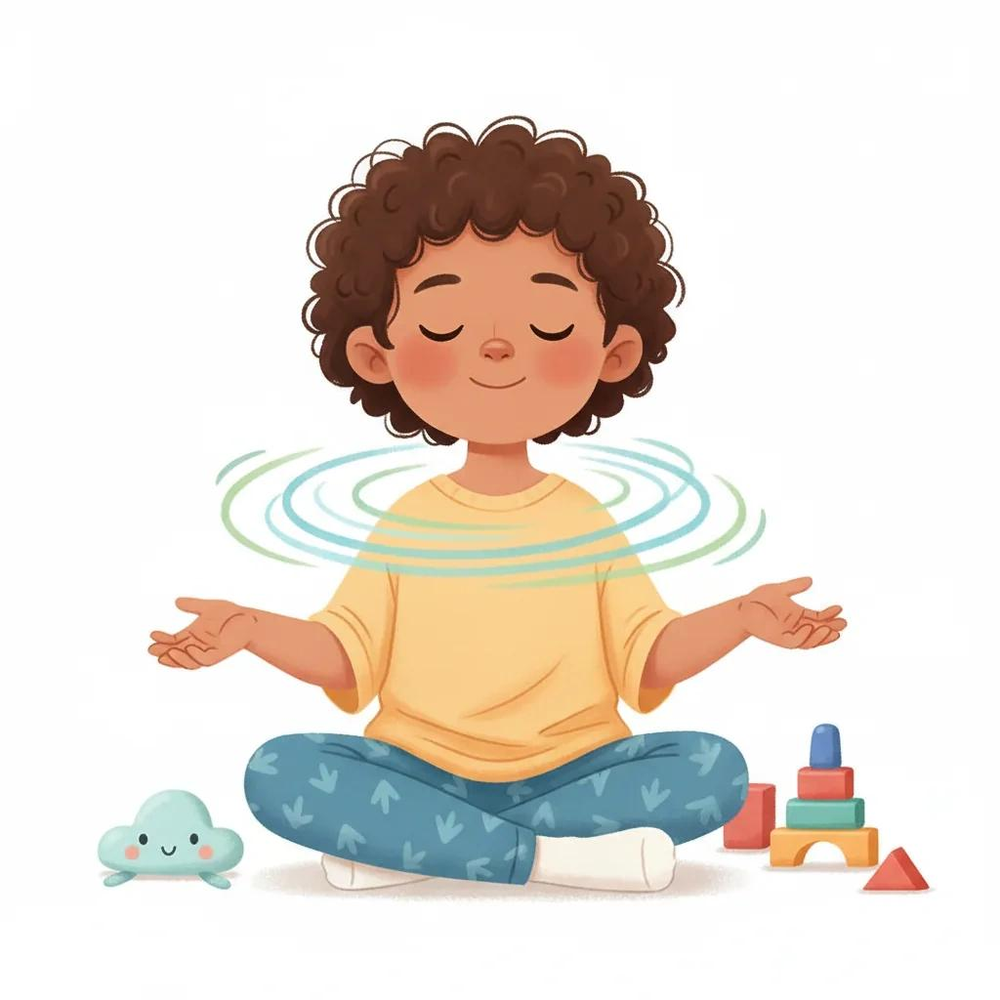

Spanning:
vriend
of vijand?
Je hoeft spanning niet altijd weg te maken.

Je hoeft spanning niet altijd weg te maken.

Je lichaam probeert je klaar te maken.


Zet spanning om in enthousiasme en actie.
“Ik voel spanning.
Die energie mag ik gebruiken!”

Je kunt zenuwachtig zijn én toch doorgaan.
“Ik vind het spannend
en ik kan het toch proberen.”

Span kort aan. Laat los. Adem rustig uit.
“Ik mag even pauzeren.”

Je mag kiezen. En je kunt ze combineren.
Wat zou jij proberen bij een spreekbeurt, toets of wedstrijd?